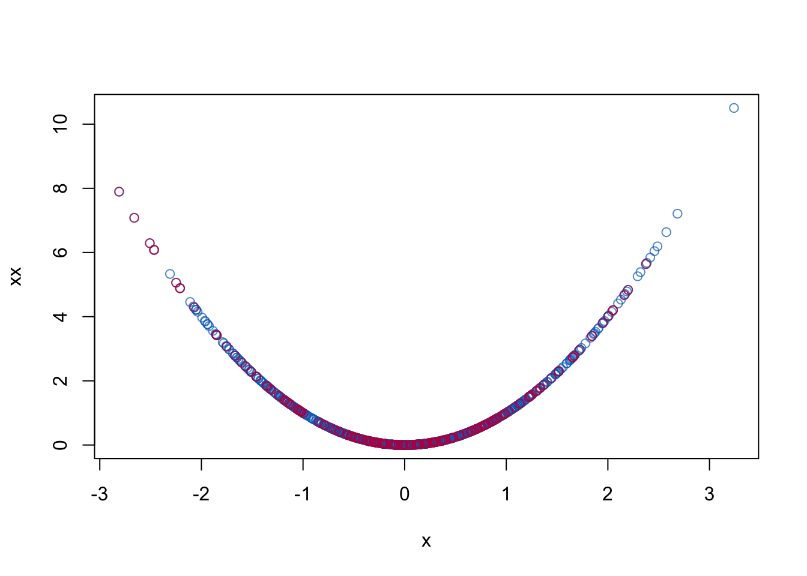

library(devtools)
install_github("amices/mice")
library(mice) Multivariate predictive mean matching
Vignette 9 of 10
This is the ninth vignette in a series of ten.
Multivariate predictive mean matching is a generlised form of univariate predictive mean, which can impute incomplete variables simultaneously.
Packages used
The following packages are used.
Data generation
set.seed(123)
B1 <- .5
B2 <- .5
X <- rnorm(1000)
XX <- X^2
e <- rnorm(1000, 0, 1)
Y <- B1 * X + B2 * XX + e
dat <- data.frame(x = X, xx = XX, y = Y)
# Impose 25 percent MCAR Missingness
dat[0 == rbinom(1000, 1, 1 - .25), 1:2] <- NAImputation
# Prepare data for imputation
blk <- list(c("x", "xx"), "y")
meth <- c("mpmm", "")
# Impute data
imp <- mice(dat, blocks = blk, method = meth, print = FALSE)Plot results
# Pool result
pool(with(imp, lm(y ~ x + xx)))Class: mipo m = 5
term m estimate ubar b t dfcom
1 (Intercept) 5 0.05578371 0.0016216338 1.661769e-05 0.0016415750 997
2 x 5 0.59094081 0.0011099659 3.690944e-04 0.0015528792 997
3 xx 5 0.49449325 0.0006135508 7.122431e-05 0.0006990199 997
df riv lambda fmi
1 948.52459 0.0122970 0.01214762 0.01422397
2 45.99019 0.3990332 0.28522070 0.31440121
3 204.81271 0.1393025 0.12227001 0.13071733plot(dat$x, dat$xx, col = mdc(1), xlab = "x", ylab = "xx")
cmp <- complete(imp)
points(cmp$x[is.na(dat$x)], cmp$xx[is.na(dat$x)], col = mdc(2))